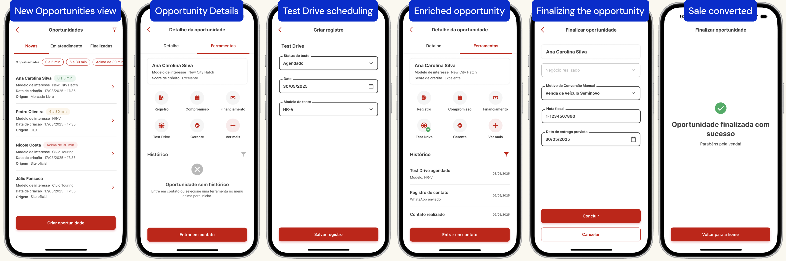

01 · Automotivo · Montadora global · 2025–2026 · Design de Interação
Redesenhando um CRM de concessionárias a partir de como os vendedores realmente vendem
As concessionárias ignoravam o CRM de uma montadora global, deixando a maior parte das vendas no Brasil sem rastreabilidade. Liderei o redesenho para um app mobile-first em que registrar uma venda é consequência natural de vender, hoje em uso em toda a rede de concessionárias da marca no Brasil.
280
usuários ativos diários, em média
78 mil
oportunidades gerenciadas
1.900
oportunidades offline, antes sem registro
Desafio
O CRM de concessionárias da montadora era amplamente ignorado pelos vendedores, o que deixava a maior parte das vendas no Brasil sem rastreabilidade e fazia a marca perder dados de mercado valiosos. O desafio: rastrear todas as vendas sem forçar as concessionárias a um processo que não combina com a forma como elas vendem.
Estratégia
Comecei investigando por que a primeira versão (1.0) do CRM fracassou. O principal insight foi que o sistema impunha uma sequência fixa de venda que não correspondia ao jeito como os vendedores trabalham no salão. Traduzi isso em uma experiência redesenhada, mobile-first, construída em torno de eficiência e de fluxos de baixo esforço, para que a rastreabilidade virasse consequência da venda, e não trabalho extra.
Meu papel
- Liderei o design de interação do novo app mobile do CRM
- Desenhei o fluxo de vendas flexível, que equilibra a liberdade do vendedor com a rastreabilidade dos dados
- Reconstruí um guia de estilo existente como uma biblioteca de componentes acessível e funcional
- Estruturei a operação de design de um time recém-formado
Concessionárias precisam de um CRM que acompanhe a rotina no salão
Dez entrevistas com concessionárias piloto durante a descoberta serviram de base para definir os princípios de design.
O sistema parecia mecânico e o fluxo era rígido demais. Vender é intuitivo e baseado em relacionamento, mas a versão 1.0 tratava a venda como uma sequência de etapas a cumprir.
Apoiar o relacionamento, não o procedimento.
Os vendedores precisam conseguir gerenciar oportunidades e registrar dados de forma flexível.
Faltavam ferramentas essenciais. A versão 1.0 não ajudava a transformar um lead em venda fechada: não havia simulação de financiamento nem avaliação de seminovos.
Integrar com as ferramentas existentes.
As concessionárias já usam ferramentas para essas tarefas, mas reuni-las em um só lugar ajuda a acompanhar melhor as oportunidades de venda no longo prazo.
O ritmo é intenso. Leads online chegam com SLA curto, enquanto clientes presenciais precisam de atenção ao mesmo tempo.
Projetar para a agilidade.
O trabalho mais urgente fica visível de relance, e as ações mais frequentes exigem o mínimo de toques possível.
Rastreabilidade como consequência da venda
Desenhando o funil de oportunidades para que vender e registrar sejam a mesma ação.

Os vendedores podem registrar ações de venda qualificadas (como test drives, simulações de financiamento e avaliações de seminovos) em qualquer ordem, ou não registrar nenhuma. As únicas etapas obrigatórias do fluxo são entrar em contato com o lead (no caso de leads vindos do online) e registrar o resultado de cada oportunidade.
Adoção crescente nos 60 dias após o lançamento
O novo CRM está no ar em todas as concessionárias da marca no Brasil desde agosto de 2026. Os números gerais de adoção ainda apontam desafios de experiência, mas mostram uma tendência positiva. A montadora passou a ter mais visibilidade sobre o processo das concessionárias e a trazer mais dados para o seu ecossistema.